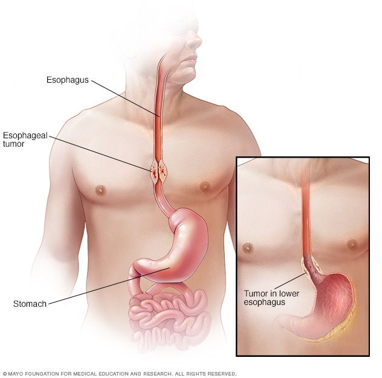

Esophageal Cancer

SYMPTOMS:
Signs and symptoms of esophageal cancer include:
- Difficulty swallowing (dysphagia)
-
Weight loss without trying
-
Chest pain, pressure or burning
-
Worsening indigestion or heartburn
-
Coughing or hoarseness
CAUSES:
- It's not exactly clear what causes esophageal cancer.
-
Esophageal cancer occurs when cells in the esophagus develop changes (mutations) in their DNA. The changes make cells grow and divide out of control. The accumulating abnormal cells form a tumor in the esophagus that can grow to invade nearby structures and spread to other parts of the body.
DIAGNOSIS:
- Barium swallow study. During this study, you swallow a liquid that includes barium and then undergo X-rays. The barium coats the inside of your esophagus, which then shows any changes to the tissue on the X-ray.
-
Using a scope to examine your esophagus (endoscopy). During endoscopy, your doctor passes a flexible tube equipped with a video lens down your throat and into your esophagus. Using the endoscope, your doctor examines your esophagus, looking for cancer or areas of irritation.
-
Collecting a sample of tissue for testing (biopsy). Your doctor may use a special scope passed down your throat into your esophagus (endoscope) to collect a sample of suspicious tissue (biopsy). The tissue sample is sent to a laboratory to look for cancer cells.
TREATMENT
- What treatments you receive for esophageal cancer are based on the type of cells involved in your cancer, your cancer's stage, your overall health and your preferences for treatment.